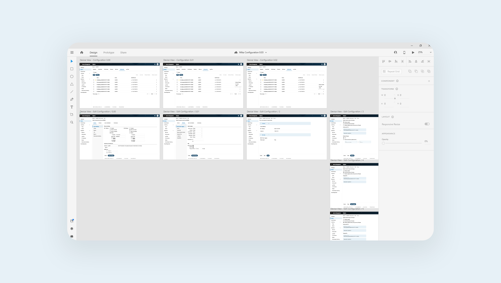

Lantronix ConsoleFlow - Configuration
Background
ConsoleFlow is a centralized management platform that allows network operators, engineers, and support teams to monitor, manage, and control their remote assets. This software aggregates data into a centralized directory from assets in the data center, development lab, or remote/branch office.
This project focused on the design for remote configuration through a graphical user interface and templates.
Problem
Users don't have an intuitive user interface to configure their devices through the cloud.
If
they want
to configure the device through a GUI, they must log into it and make the desired changes. Otherwise, they
connect to the device remotely and interact through CLI.
Users take too long configuring multiple devices.
Organizations buy dozens or hundreds of
devices.
They want to reduce the amount of time they’re spending
configuring devices so they can focus on monitoring and maintaining their assets.
Solution
Include a streamlined graphical user interface for configuration through the cloud that allows users to remotely configure batches of devices. Use the graphical user interface to create templates that contain a device’s full or partial configuration that can be pushed to 1...N devices.
This project was initiated before I joined the company, so I was not included in the discussion of requirements, user stories, or exploration of solutions. The proposed solution was determined by product management.
The Team
This feature required collaboration from product management and engineering - both on device firmware side and cloud side. The IoT and Out-of-Band principal engineers needed to know what configuration data the devices had to send, and the backend cloud engineer needed to process that information. I worked primarily with the product line manager to translate user stories into designs and with the backend engineer to review if the design fit into the proposed schedule.
Process
The first thing I had to do was to thoroughly understand existing user flows. I conducted interviews with the field application engineers to understand how users currently configure their devices directly when logged in.
Interviews
I conducted two interviews with field application engineers and asked the following questions while they shared their screen:
- Using the device's web manager, how do you configure the network settings on your device?
- How do you configure the device ports?
- What are some other parameters you configure on a regular basis?
Findings
There is an extensive amount of configuration parameters.The web manager for configuring devices can be overwhelming because of amount of options presented to the user. They can easily get lost on the user interface because they may not remember where to go to configure certain parameters.
Users configure their devices in small chunks at a time.Changes are applied page by page. At the bottom of each configuration page, there is an "Apply" button, and users see immediate feedback after changes occur. They are immediately informed of the success state and if any errors occurred.
With these findings in mind and a better understanding of existing user flows, I headed to Adobe XD to start brainstorming and designing.
Iteration 1
Designed high fidelity mockups representing what I saw on the device's web manager and embedding it into the existing ConsoleFlow design
Had to adapt to product line management's requirements for information architecture on where the new configuration feature would go
Reviewed with out-of-band device engineers for usability feedback
Reviewed with field application engineers for usability feedback through video recorded demos and open discussion.
LimitationsLorem
Iteration 2
Fixing some confusion on templates
Clarified the way templates can be applied partially
Iteration 3
Job status, awareness, and recovering from errors
Making it easier for users to see exactly what's going on